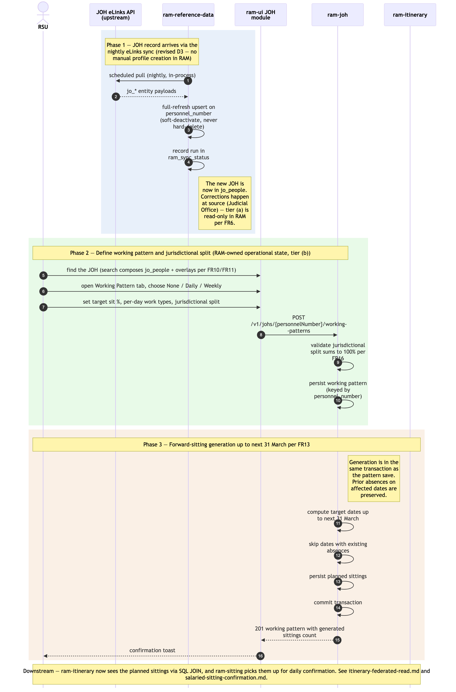

JOH onboarding + working-pattern-driven sitting generation
Sequence diagram of how a new JOH (Judicial Office Holder) enters RAM Pathfinder and how that JOH's working pattern automatically populates planned sittings up to the next 31 March. This is the upstream of every downstream operational flow — absences, vacancies, bookings, sittings, payments, itineraries all depend on the JOH records and planned sittings produced here.
JOH person records are not created manually in RAM12. The canonical record is jo_people, refreshed nightly from the JOH eLinks API by ram-reference-data's in-process scheduled sync. RAM keeps RAM-owned operational state over the upstream records — working patterns, ticket overlays, location overlays, jurisdictional splits — owned by ram-joh and keyed by personnel_number.
The as-is equivalent is Module 2 Manage Judges in ../../../docs/architecture/asis/functional-modules.md and Integration Flow 1 Judge Master Data (eLinks / HR → JI) in ../../../docs/architecture/asis/integration-dependencies.md. In the as-is system the data is copied in manually from eLinks and HR records; RAM Pathfinder replaces the manual copy with the live eLinks integration (NFR24 reframed3).
Three phases: (1) JOH record arrives via the eLinks sync; (2) working pattern + jurisdictional split; (3) forward-sitting generation up to next 31 March.
Not in this diagram
- MRD ingestion (weekly Excel via blob drop — JOH Specialisations) — same tier-(a) pattern as the eLinks sync; see
../../architecture.md→ Upstream reference-data ingestion. - Cross-Region base-location change (FR17) — out-of-system; requires OPT Advice Point in the as-is and a programme decision in RAM Pathfinder. In-Region changes land in
ram_joh_location. - Off-circuit / cross-Region JOH linking for bookings (FR18) — handled as a read-only link in
./itinerary-federated-read.md, not in this flow. - Editing an existing working pattern — same shape as Phase 2 + Phase 3 but with prior-absence preservation logic; not drawn separately to keep the diagram lean. The architectural rule (preserve prior absences when regenerating sittings, FR13) is the same.
- Ticket overlay maintenance (FR15 layer (b)) — DBA-via-SQL in MVP4; admin UI post-MVP.
Cross-cutting steps omitted for clarity
- Authentication + per-request authorisation — RSU's JWT is validated by each service's
JWTFilterand resolved againstram-authorisationon every call (two-population identity resolution5). See./user-authentication-and-authorisation.md. - All UI → service calls flow through Azure API Management.
- Validation errors at any step return RFC 9457 problem-details and the user retries; not drawn explicitly.

Source: ./joh-onboarding-and-sitting-generation.mmd (Mermaid). Regenerate with mmdc -i joh-onboarding-and-sitting-generation.mmd -o joh-onboarding-and-sitting-generation.png -w 2400 -s 2 --backgroundColor white.
Phase summary
| Phase | Driver | Architectural rule | Outcome |
|---|---|---|---|
| 1 — JOH record via eLinks sync | ram-reference-data (nightly in-process @Scheduled sync) |
Revised D3 / FR6 tier (a) — jo_* tables refreshed by full-refresh upsert on personnel_number; soft-deactivation, never hard-delete; run recorded in ram_sync_status; read-only in RAM, corrections at source |
New JOH present in jo_people; visible to search/profile views (FR10/FR11) |
| 2 — Working pattern + jurisdictional split | RSU (Full Access) | FR12 + FR16 — pattern type (None / Daily / Weekly), target sit %, per-day work types; jurisdictional split percentages must total exactly 100%. RAM-owned operational state (tier (b)) | Working pattern persisted in ram_working_patterns, keyed by personnel_number |
| 3 — Forward-sitting generation | ram-joh (server-side, in-transaction with pattern save) |
FR13 — auto-populate planned sittings up to the next 31 March, preserving any prior absences on the affected dates | ram_sittings rows in planned status for the JOH over the generation horizon; visible to ram-sitting for confirmation flows and to ram-itinerary for read federation |
Where to find more detail
| Detail | Location |
|---|---|
ram-joh repo purpose and key functions |
../repository-strategy.md Phase 1 row |
| eLinks sync + MRD ingestion design (schedule, upsert, failure handling) | ../../architecture.md → Upstream reference-data ingestion |
| Working-pattern semantics (None / Daily / Weekly; target sit %; jurisdictional split) | PRD FR12, FR13, FR16; Module 2 in ../../../docs/architecture/asis/functional-modules.md |
jo_people, ram_working_patterns, ram_sittings tables (column-level detail) |
../data-tables.md |
| JOH UI module structure | ../repo-structure.md → ram-ui/src/modules/joh/ |
Why this flow is in ram-ui and not ram-admin-ui (RSU operational vs admin) |
../../architecture.md → Step 4 Frontend Architecture — v2.10 / D10 |
| Downstream consumers — Itinerary read federation | ./itinerary-federated-read.md |
| Downstream consumers — Sitting confirmation flow | ./salaried-sitting-confirmation.md |
| As-is equivalent (Module 2 Manage Judges; manual eLinks/HR entry) | ../../../docs/architecture/asis/functional-modules.md → Module 2; ../../../docs/architecture/asis/integration-dependencies.md → Flow 1 |
Revised D3 (2026-06-10) — no data migration from any legacy system; judicial-holder reference data is ingested from the JOH eLinks API and MRD.↩︎
D11 (2026-06-10, amended 2026-06-18) — SSCS-first pilot: wave 1 replaces ListAssist (the SSCS judicial-scheduling tool); GAPS (SSCS case management) is retained, not replaced; waves 2+ replace JI/APEX per Courts region.↩︎
D11 (2026-06-10, amended 2026-06-18) — SSCS-first pilot: wave 1 replaces ListAssist (the SSCS judicial-scheduling tool); GAPS (SSCS case management) is retained, not replaced; waves 2+ replace JI/APEX per Courts region.↩︎
D10 (2026-05-15) — admin UI is post-MVP; MVP admin operations are DBA-via-SQL per operational runbooks.↩︎
Restructured D9 (2026-06-10) — two user populations: JOHs resolve via jo_people to a personnel number; HMCTS admin staff via a RAM-internal identity table. No legacy user migration.↩︎
Source: _bmad-output/planning-artifacts/architecture/sequence-diagrams/joh-onboarding-and-sitting-generation.md